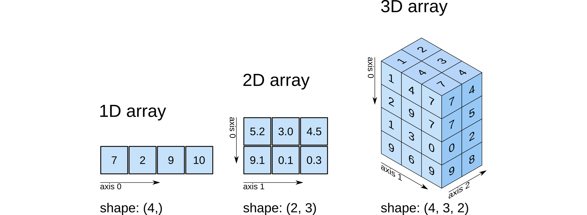

Introduction to Python
Contents
Introduction to Python¶
Authors: Enze Chen (University of California, Berkeley)
Note
This is an interactive exercise, so you will want to click the and open the notebook in DataHub (or Colab for non-UCB students).
This notebook contains a series of exercises that are intended for people who are new to Python. It does assume some programming familiarity (e.g., maybe in MATLAB), so the focus is largely on Python syntax. It is also targeted towards what you’ll need to finish the laboratory exercises, so we won’t discuss all of the details of Python. We suggest you go through the notebook sequentially; however, if you find that you already know a lot of this information, feel free to skip around (NumPy might be new to most). If everything in the following Table of Contents looks familiar to you, you can probably proceed directly to Lab 1 exercises.
General Python¶
One of the simplest things to try in Python is to use it as a “calculator” to evaluate mathematical expressions. This is pretty much identical to the MATLAB command line. We can directly type the expression into a code cell and evaluate it (remember: Shift+Enter!) to get a result, such as:
2021
2021
If it troubles you that the output from the last line is automatically displayed, you can explicitly call it (or any other line) with the built-in print() function like so:
print(2021)
print(2021 + 1)
2021
2022
We can perform arithmetic using the following operators:
+for addition-for subtraction*for multiplication/for division**for exponentiation (not^)
print(3.1415 * 2)
6.283
Quick exercise: compute 2 raised to the power of 3¶
# ------------- WRITE YOUR CODE IN THE SPACE BELOW ---------- #
Variables¶
Notice that after we execute the above expressions, the value is displayed, but “lost” in the sense that we cannot use it for future computations (without typing the whole expression again). This calls for variables, which can also help improve code readability. All Python variables have three components:
A
namethat you assign.A
valuethat is the data it holds.A
typefor the data type.
Typically variables are created using the syntax name = value, where = is the assignment operator that assigns the value on the right-hand side to the variable name on the left-hand side.
For the name, it should be descriptive (explains what quantity it represents) but short.
Below, we create the year variable and assign it a value of 2021.
Now when we want to print its value, we can reference the variable instead of the numerical expression.
year = 2022
print(year)
2022
Types¶
When we say “data type,” we’re describing what sort of data the variable contains.
You’ve already seen two data types in the previous examples, namely int (for integer) and float (for decimals).
Python also has a built-in function type() that will return the type of a variable.
For example:
print(type(year)) # in Jupyter we can reference variables and data from previously-run cells!
<class 'int'>
Two more common data types that you will see are string (for text) and bool (for logical True/False).
Strings 🧵¶
Strings in Python are created using single quotes (') or double quotes ("), and you can take your pick, as long as you’re consistent.
Generally it doesn’t matter, except when the text you’re enclosing has a single (or double) quotation mark, in which case you will want to surround your whole string with the other one.
'band gaps' # single quotes on both sides
"1337" # double quotes, just as good. Note how this is still a string, not an integer!
"That's cool!" # here we have to use double quotes for the string since "That's" has an apostrophe
Just to re-emphasize: Even if the characters in a string are numbers, the whole expression inside the quotes is still a string.
If we want to change the second line from str to int, we would have to cast the value using the built-in int(...) function.
a = 1337
b = '1337'
print(a, b)
print(type(a))
print(type(b))
print(a == b) # The == operator checks for equality; see next section!
print(a == int(b)) # we cast b to int type
print(str(a) == b) # we cast a to str type
1337 1337
<class 'int'>
<class 'str'>
False
True
True
Did you know that you can join two strings together with the + operator?
It’s pretty cool.
Run the next cell to check it out.
first = 'UC Berkeley ' # note the trailing space!
second = 'is the best!'
print(first + second)
UC Berkeley is the best!
The print statement below contains an f-string, which is very cool.
It allows us to include other data types within strings, as long as we enclose that quantity inside curly braces {} and preface the string with an f character.
Note that the quantity inside the {} can even be an expression that’s evaluated on-the-fly!
print(f'{first}{second}!!')
UC Berkeley is the best!!!
Control flow¶
Now that we’ve covered logic, we can move onto some more exciting content: control flow! These are syntactic structures that modify the execution of your Python code . We’ll discuss two control flow structures here that you might find helpful and have probably seen in other programming languages.
if/elif/else 🔀¶
These three keywords are used for conditionals, which is when your code has some branching logic that executes differently depending the conditions that are satisfied. Conditionals in Python have the following syntax:
if [Boolean expression]: # note the colon!
# do something if True # note the indentation by four spaces!
elif [another Boolean expression]: # optional; can also have multiple
# do something else if this part is True # same amount of indentation
else: # all other cases
# do something
A few things to point out:
Conditionals end with a colon
:. This is just part of the syntax and is different from MATLAB, but also hopefully more clear.Another strange thing about Python is its reliance on whitespace and indentation. Note that the stuff “inside” each conditional statement is indented (by four spaces) from the beginning.
It must be indented, although you can choose by how much. Just make sure your choice is consistent.
This is how Python keeps track of everything underneath the
ifstatement and whatever is not indented begins the next section (in this case,elif).There are no curly braces in Python, which is what you might be used to if you’re coming from Java/C++.
Protip: If you want to indent several lines at once, highlight them all and press Tab. If you want to reduce the indentation (shift them all to the left), highlight them and press Shift+Tab.
a = 4 # You can change this and see what happens
if a % 2 == 0:
print('Even!')
else:
print('Odd!')
Even!
for loops 🔁¶
The second topic that we will cover is the idea of loops, which is when you want to repeat a chunk of code to automate similar tasks.
As you probably know from your previous experience, for loops are used when you know how many times you want to repeat a task.
The syntax is
for i in range(N):
# do something
range(N) is another built-in function that creates a collection of integers from 0 to N-1, inclusive.
Therefore, the body of the loop will execute \(N\) times, and each time, the variable i will take on a different value from 0 to N-1.
You can also start at a non-zero integer M if you specify it, such as range(M, N).
Note also that the body of the for loop is indented.
Everything that is indented will be part of the loop, and as soon as the indentation is removed, the remaining code is outside of the loop.
for i in range(3):
print(i) # 0-indexed!
0
1
2
Functions¶
Just as variables are excellent at storing data for future, repeated use, functions are great at storing commands for future, repeated use.
We’ve already seen a few examples of built-in functions above: print(), type(), range(N).
From these examples, you should notice that functions are called with their name followed by parentheses.
Inside the parentheses, there may or may not be input arguments.
These input arguments can have an implied order, or explicitly specified with keywords, as shown below.
As we go along, we’ll see more examples of functions that we can call to help us accomplish certain tasks in Python.
N = 3
for i in range(N):
print(i)
print()
for i in range(1, N):
print(i)
print()
print('Hello', 'there')
print('Hello', 'there', sep='\n') # keyword argument
0
1
2
1
2
Hello there
Hello
there
Writing your own function¶
Sometimes, the function you need hasn’t yet been written by someone else, so you need to write your own. To define a new function in Python, we use the following syntax:
def function_name(arg1, arg2, ...):
# function body; do something here, such as
return 'Hello, World!'
A couple things to point out:
All function headers start with the keyword
defand a space.Then comes the name of the function, which like variable names, should be descriptive.
Functions can have zero or more input arguments in parentheses that can then be used in the body of the function.
Function headers end with a colon
:.The body (contents) of the function is indented.
The function may or may not
returna value. If you want to use the values computed by the caller of the function, you have to include areturnstatement and save the returned value(s) inside variables.
Lists¶
The fun is just beginning! 😁 So far we’ve covered variables, data types, control flow, and functions. A natural question to ask next is what should we do if we have several pieces of data? Do we create a variable for each one? Or is there somewhere we can store the collection of data for later access? This means it’s time to discuss data structures, and here we will cover lists and dictionaries.
A list is an ordered data structure that stores a sequence of values.
The elements are contained within square brackets [...] and separated by commas ,.
The values in a list can have different types, and they can even be lists themselves.
We’ll start by creating a few lists by hand.
empty = [] # an empty list (no elements)
num = [1, 2, 4, 123] # a list of ints
materials = ['metals', 'semiconductors', 'insulators'] # a list of strings
mixed = [False, 1, 'two', 3.0, [4, 5]] # a list of many DIFFERENT data types
print(mixed) # lists are printed as: [elem1, elem2, ...]
[False, 1, 'two', 3.0, [4, 5]]
Quick exercise: Name all the data types/classes of the elements in the list named mixed above¶
There is yet another handy built-in function, len(), that returns the length of a list (number of elements in the list).
We often use this number to figure out the size of our dataset, set the range() function in a for loop, and perform arithmetic.
Quick exercise: Below, print the length of the list mixed¶
Assuming you executed the previous cell, you can directly use the mixed variable.
But before you write the one line of code below, we ask you to think about it: Will the length be 5 or 6? Why?
# ------------- WRITE YOUR CODE IN THE SPACE BELOW ---------- #
Accessing list elements¶
We can access the elements of a list by specifying the appropriate index, which must be an int.
In Python, lists (and other data structures) are indexed starting at 0.
This is like most other programming languages, but it notably differs from MATLAB, so beware!
The syntax is as follows:
my_list[ind]
We can also index a list starting from the end if we use a negative index. But we cannot specify an index that is outside the “bounds” of the list. Examples include:
core = [102, 103, 104, 111, 112, 113, 130, 151]
print(f'The first course is {core[0]}.')
print(f'The third course is {core[2]}.')
print(f'The last course is {core[-1]}.')
print(f'The 9th student is {core[8]}.') # error!
The first course is 102.
The third course is 104.
The last course is 151.
---------------------------------------------------------------------------
IndexError Traceback (most recent call last)
~\AppData\Local\Temp\ipykernel_106828\4080821567.py in <module>
3 print(f'The third course is {core[2]}.')
4 print(f'The last course is {core[-1]}.')
----> 5 print(f'The 9th student is {core[8]}.') # error!
IndexError: list index out of range
We can also take slices of a list, which is a subset of elements, using the following syntax:
my_list[start:stop:(every)]
The three input arguments (which are of int type) are:
start: The index to start the slice at. Inclusive.stop: The index to stop the slice at. Exclusive.every: Optional number to specify the frequency of skipping elements. Default is1(don’t skip any).
There are also some sneaky tricks if some of these are omitted, as shown below:
print(core[2:5]) # 3rd, 4th, 5th course; does not include index 5!
print(core[3:]) # all courses from the 4th to the end
print(core[:-1]) # all except the last course
print(core[0::2]) # skip every other course
print(core[::-1]) # reverse the list!
[104, 111, 112]
[111, 112, 113, 130, 151]
[102, 103, 104, 111, 112, 113, 130]
[102, 104, 112, 130]
[151, 130, 113, 112, 111, 104, 103, 102]
We can also access the elements of a list using a variant called a for-each loop.
This actually has the exact same syntax as the regular for loop, but instead of the index variable (e.g., i) taking on numerical values in a range (e.g., 0, 1, 2, …), the index variable tracks each value in the list.
The syntax is as follows:
for val in my_list:
# do something with each val
Quick exercise: write a for-each loop to print out each course’s number¶
# ------------- WRITE YOUR CODE IN THE SPACE BELOW ---------- #
List functions and methods¶
And the fun just doesn’t stop! Lists honestly are probably the most powerful data structures in Python. They have some pretty cool functions and methods associated with them, and we only have time to discuss a few here.
We’ve already seen one function which is len() that returns the number of elements in the list.
Some other handy functions include sum(), max(), and min() if your list has numeric elements.
sorted() is another function that takes your list and returns a sorted list with the same elements in increasing order.
These are all functions that take the list as an input argument.
print(f'The min and max are {min(core)} and {max(core)}, respectively.')
core_sorted = sorted(core, reverse=True) # a keyword argument!
print(f'The sorted list is: {core_sorted}')
The min and max are 102 and 151, respectively.
The sorted list is: [151, 130, 113, 112, 111, 104, 103, 102]
Dictionaries¶
Lists are nice when we want to organize our data and access them later using an index. But there are times when we want to have a different data access pattern. For example, if we wanted to get chemical data on the elements, we’re never really going to say, “Oh I want to access the fifth property of the third element;” but rather, “What is the atomic mass of lithium?”
This calls for a new data structure!
Dictionary (dict class) is a data structure that contains a collection of key:value pairs.
It is, just like a dictionary, a mapping between a particular key (like a word) to its associated value (like a definition).
They are created using curly braces {} and the entries are comma-separated tokens of key:value pairs separated by colons.
Examples include:
empty = {} # the empty dictionary
schools = {'UC Berkeley':1, 'UCLA':2, 'Stanford':2} # values can repeat; keys cannot!
band_gaps = {'copper':0, 'silicon':1.1, 'diamond':5.0}
props = {'lithium':{'number':3, 'mass':6.941, 'group':'alkali metal'}} # nested dictionary with many types!
print(band_gaps)
print(props)
{'copper': 0, 'silicon': 1.1, 'diamond': 5.0}
{'lithium': {'number': 3, 'mass': 6.941, 'group': 'alkali metal'}}
Access entries¶
To access individual entries of the dictionary, use the syntax
my_dict[key]
to get the value associated with the key.
Just like with lists, the syntax is the same for getting the value and for setting the value.
Adding new entries¶
To add an entry to a dictionary, we specify a new key:value pair:
band_gaps['germanium'] = 0.67 # new entry!
band_gaps['copper'] = 0.0 # this overrides the old entry! Now float instead of int
print(band_gaps)
{'copper': 0.0, 'silicon': 1.1, 'diamond': 5.0, 'germanium': 0.67}
A few notes on dictionaries in Python:
The keys of a dictionary must be unique. Otherwise you can imagine how confusing it is for two keys to map to different values. Multiple keys can have the same value though.
What can the
keybe? The key can be any type that is immutable.What can the
valuebe? Essentially unrestricted—they can even be other dictionaries!We stressed with
lists how they have the nice property of being ordered.dicts in Python, for the most part, are not ordered. So there’s no real sense of “the first entry” or “the second-to-last entry” in the dictionary.
The NumPy package¶
So far, everything that we’ve done is with native Python; in other words, the functions and data that come with the default Python installation. However, one of the advantages of Python is its extensibility, which comes in the form of various packages (i.e., libraries) that allow you to do more with Python. A default Python installation comes with a few extra packages installed, while others you have to install on your own.
In all cases, before you can use the functions inside a package, you have to import it as follows:
import package_name
Example:
import os # this package allows your code to interface with your operating system
print(os.getcwd()) # this is a function from the os package. We include the package namespace to use it
C:\Users\enzec\Documents\GitHub\mse104l\lab0
You’ll notice that in the above example, we had to type os.function_name() to use any function from the os package.
This will be true for all packages.
However, if the specific function is one that we use frequently, we can directly import it too, using:
from package_name import function_1_name, function_2_name, ...
from os import getcwd
print(getcwd()) # now we don't need the "os." prefix
C:\Users\enzec\Documents\GitHub\mse104l\lab0
Import NumPy¶
In this last section, we’ll be using the NumPy package to do some basic scientific computing in Python. On JupyterHub, Colab, and several other places, it comes preinstalled. 🙌🏼 To import the NumPy package, it is best practice to actually give it an alias. These are abbreviations that typically allow you to reference the package with fewer characters, resulting in cleaner code if you have to call the package a lot, which is typically the case with NumPy. The syntax for an alias is:
import standard_package_name_that_could_be_really_long as short_alias
For NumPy, this looks like:
import numpy as np # not too much shorter, but this is best practice
NumPy arrays¶
At the heart of NumPy is the NumPy array, which is used to store data into a structured format with multiple dimensions. You will find that these arrays function very similarly to arrays in MATLAB! In fact, the NumPy developers even created a comparison chart for you.
Depending on the dimensionality, these arrays correspond to our conventional notion of scalars (0D), vectors (1D), matrices (2D), and tensors (3D+), and this is described by their shape attribute.
Each available dimension of the specific array is called an axis, which is how we index into them and it factors into certain calculations.
Here’s an illustration:

To create NumPy arrays, we actually have several options.
One of the most straightforward ways, given how arrays look so similar to lists, is to convert a list into an array using the function np.array(my_list).
The resulting NumPy array is a unique object and also stores its data type, which can be accessed using the array.dtype attribute.
primes_list = [2, 3, 5, 7, 11, 13] # original data as list of int
primes_arr = np.array(primes_list) # convert to NumPy array of int
primes_str = [str(p) for p in primes_list] # change data to str by casting
primes_str_arr = np.array(primes_str) # convert to NumPy array of str
print(f'Regular list: {primes_list}')
print(type(primes_list), '\n')
print(f'NumPy array: {primes_arr}')
print(type(primes_arr))
print(f'This array has data type: {primes_arr.dtype}', '\n')
print(primes_str_arr)
print(type(primes_str_arr))
print(f'This array has data type: {primes_str_arr.dtype}')
Regular list: [2, 3, 5, 7, 11, 13]
<class 'list'>
NumPy array: [ 2 3 5 7 11 13]
<class 'numpy.ndarray'>
This array has data type: int32
['2' '3' '5' '7' '11' '13']
<class 'numpy.ndarray'>
This array has data type: <U2
Notice how a single list gave us a 1D array (like a vector), so as you might imagine, a nested list of lists will give us a 2D array, or a matrix, when we call np.array(my_list_of_lists) on it.
This will only work when the dimensions of the nested lists are consistent.
Quick exercise: given num below, create a 2D NumPy array. Print the array to observe the formatting.¶
We can also verify that the array is 2D when we print out its shape attribute, which now has two terms (2, 3).
num = [[1, 2, 3], [4, 5, 6]] # after your code works, delete the 6 and run it again
# ------------- WRITE YOUR CODE IN THE SPACE BELOW ---------- #
Creating NumPy arrays¶
There are many more ways to create NumPy arrays, and we’ll demonstrate a few here.
In 1D, there are two primary methods we use to create arrays.
There is a np.arange() function that works analogously to the range() function we saw with for loops.
It generates a sequence of integers from the starting number (inclusive) to the ending number (exclusive).
There is also a np.linspace(start, stop, num_points) function that works analogously to linspace() in MATLAB.
This generates a NumPy array of length num_points with evenly-spaced points between start and stop, both inclusive.
Note that both functions require specifying the np package prefix.
Quick exercise: create and print the following 1D arrays¶
A range of integers from 0 to 99, inclusive.
An array of 15 evenly-spaced numbers from 0 to 50, inclusive.
# ------------- WRITE YOUR CODE IN THE SPACE BELOW ---------- #
Creating an array from a text file¶
There is an np.loadtxt() function that can read in text files that are formatted with an array structure.
For example, if you had a file with the following contents:
0.000,0.000000
0.001,0.000100
0.002,0.000399
0.003,0.000897
0.004,0.001594
...
it would certainly be convenient to directly load the contents of this file into a 2D NumPy array with two columns.
The np.loadtxt() function takes the following input arguments (more arguments can be found in the linked documentation):
fname: The name of the text file (required).delimiter: The token that separates the different elements. Default is a space, but you might need comma (',') or something else.skiprows: Helpful if there are extraneous lines at the beginning of your file. Default is0if not specified (i.e., start from the top).max_rows: Helpful if there are extraneous lines at the end of your file. Default isNoneif not specified (i.e., read the whole file to the last line).
arr = np.loadtxt('np_txt_demo.txt', delimiter=',')
arr
array([[0.00000e+00, 0.00000e+00],
[1.00000e-03, 1.00000e-04],
[2.00000e-03, 3.99000e-04],
...,
[9.98000e-01, 1.99201e-01],
[9.99000e-01, 9.98000e-02],
[1.00000e+00, 0.00000e+00]])
Conclusion¶
Ta-da! 🎉 This concludes our abbreviated whirlwind introduction to Python. The first notebook for Lab 1 is also a tutorial—on plotting data—and it will apply the knowledge presented here, assuming that you are at least somewhat familiar with all of these concepts.